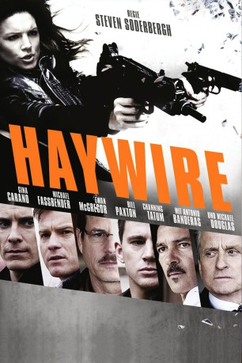

#6848 Haywire - Trau' keinem
 
 IMDB-Wertung: 5.8 / 10
IMDB-Wertung: 5.8 / 10  Metascore: 0
Metascore: 0 
In Haywire wird die für mörderische Geheimaufträge ausgebildete Special Agentin Mallory Kane von ihren eigenen Auftraggebern ans Messer geliefert. Mallory muss es nun nicht nur mit ihrem zwielichtigen Vermittler Kenneth und dem charmanten Killer-Kollegen Paul aufnehmen, sondern auch noch den jungen Scott beschützen. Doch wer sind die Drahtziehers des Komplotts?
Jahr: 2011
Dauer: 93 Minuten
FSK: 16
Land: Irland Studio: Concorde FilmverleihTonspuren: DTS-HD - ,
Untertitel: Deutsch,
Auflösung: 1080p (1920x800) Größe: 7997 MB
Genre: Action, Thriller
Regisseur:  Steven Soderbergh
Steven Soderbergh
Drehbuch: Lem Dobbs
Soundtrack:
Darsteller:
Datei: X:\2011(G-M)\Haywire - Trau' keinem (2011, FSK16, 1920x800).mkv seit 01.09.2017
Festplatte: HD 2011(G-Z)
 Es gibt insgesamt 100 Filme in der Gruppe '2011(G-M)'
Es gibt insgesamt 100 Filme in der Gruppe '2011(G-M)'